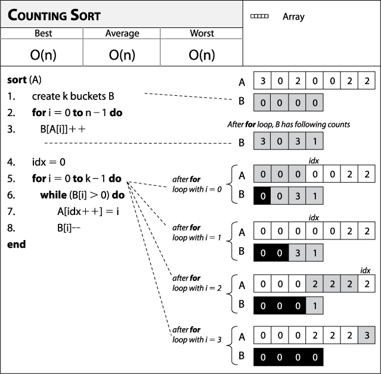

Counting sort is a sorting technique based on keys between a specific range. It is an integer sorting algorithm. It works by counting the number of objects having distinct key values (kind of hashing). Then doing some arithmetic to calculate the position of each object in the output sequence.
